Live race page
Splits, pace against the cutoff and the projected finish, as it happens.
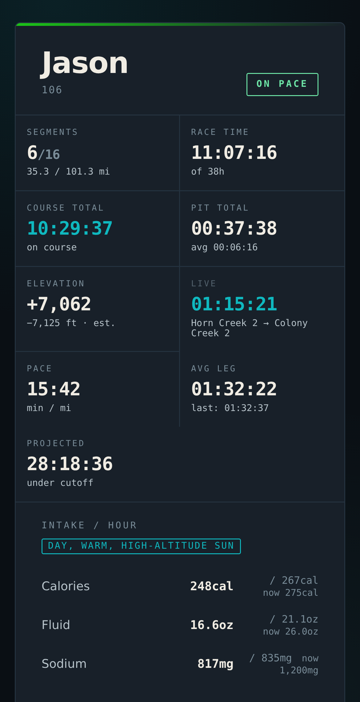
Course map
The course, the aid stations and about where they are now, with the elevation profile under it.
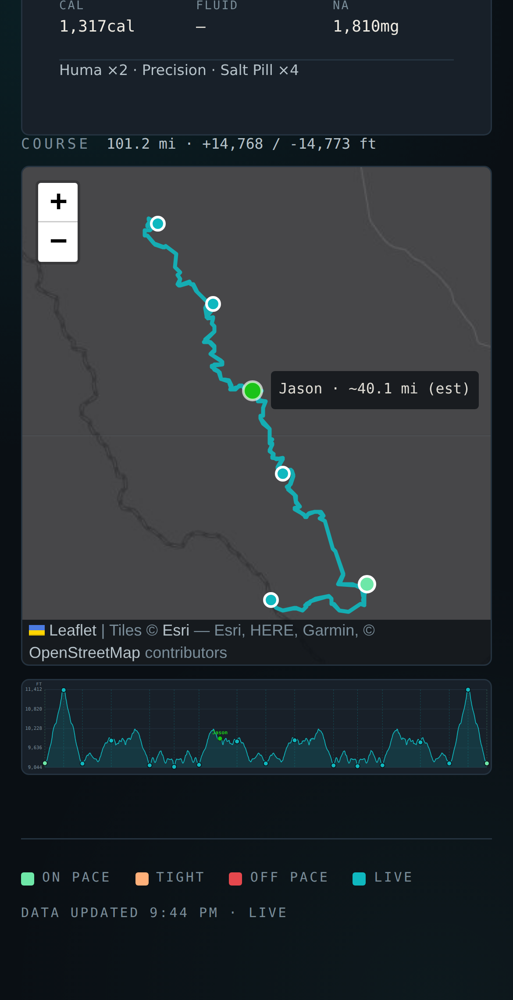
Race photos
Crew and racers post photos as it happens, filed under the leg they were taken on.
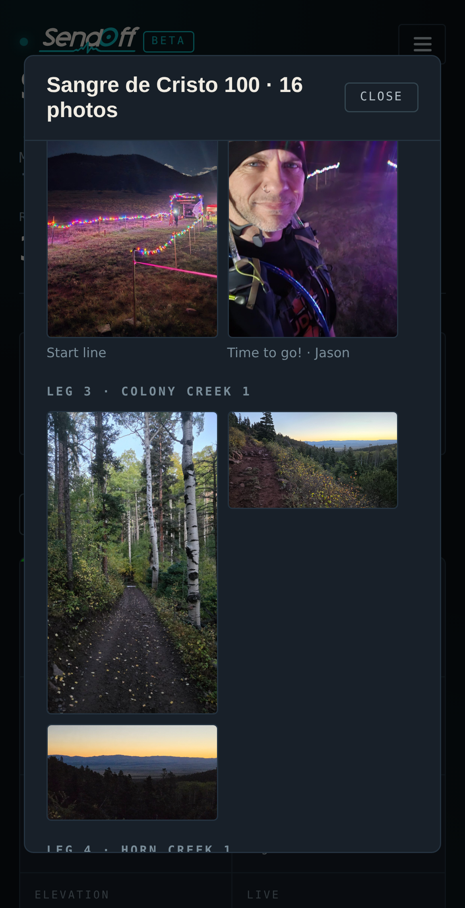
Share link
Every race gets its own page and its own preview card. Text it to the family, post it, drop it in the group chat.
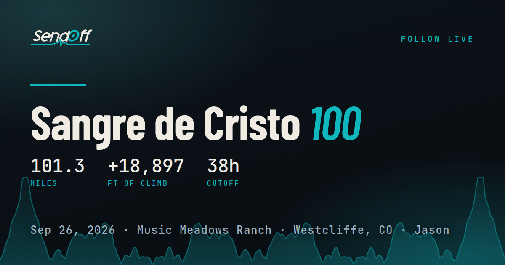
Pit board
How long they have been out, where they are headed, and one big button when they arrive.
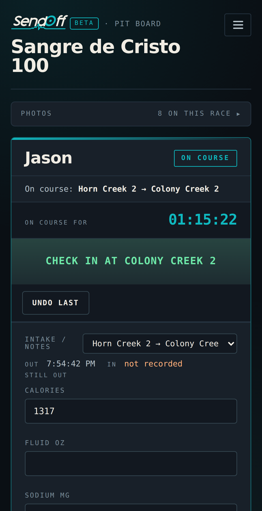
Fuel plan
Targets that change as the race wears on: the night, the heat, day two. Every screen tracks against the one that is live.
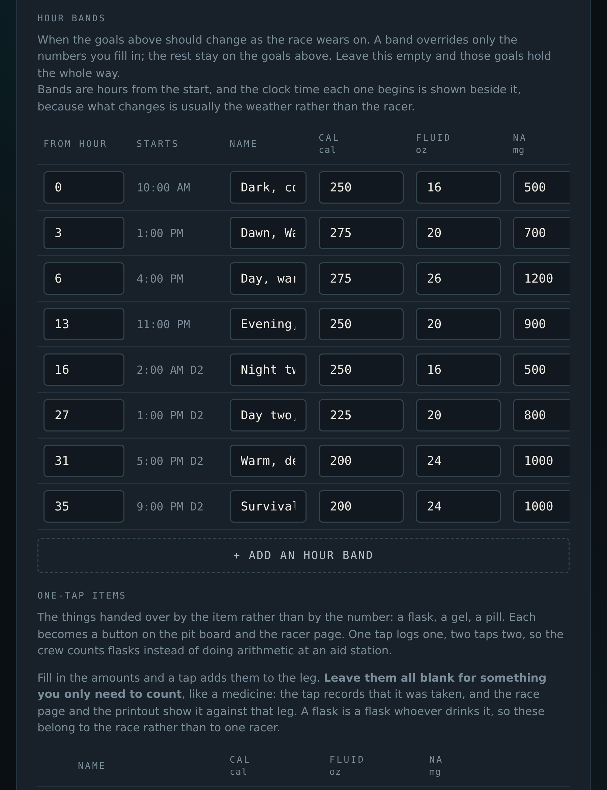
Works with no signal
Every tap is saved on the phone and sends itself the moment there is signal again.
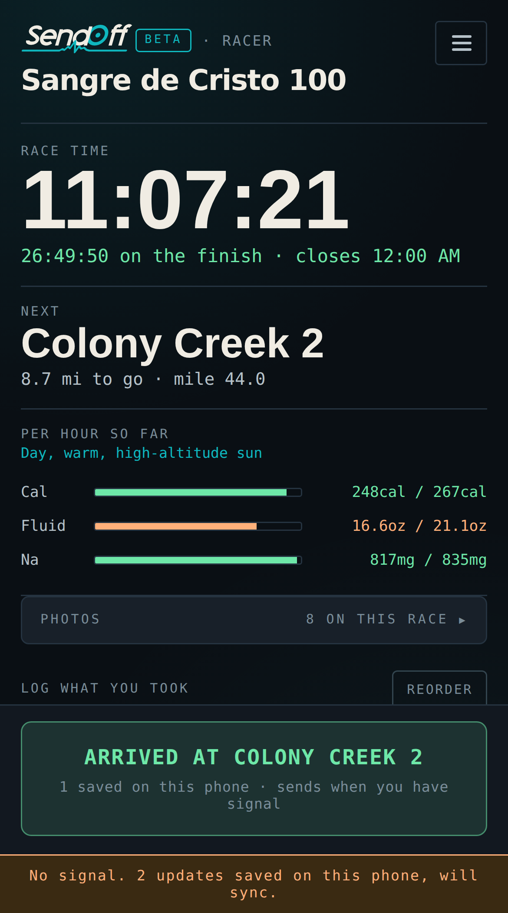
Your crew
Invite crew, pacers and family. Crew can log, viewers can watch, and you decide who can invite.
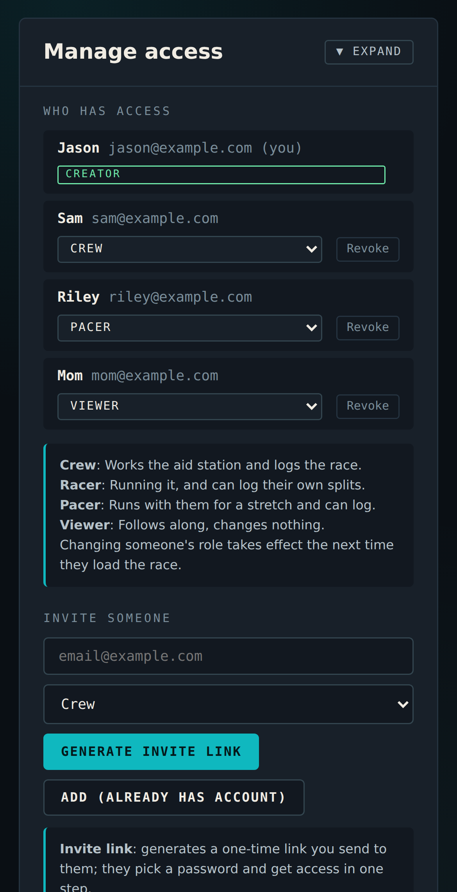
Racer screen
One-tap buttons for everything you carry. Drag the ones you use most to the top.
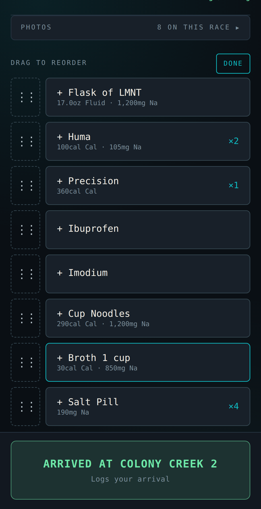
Write-in notes
For everything that is not a button: aid station food, gear changes, hot spots. Type it, log it, keep moving.
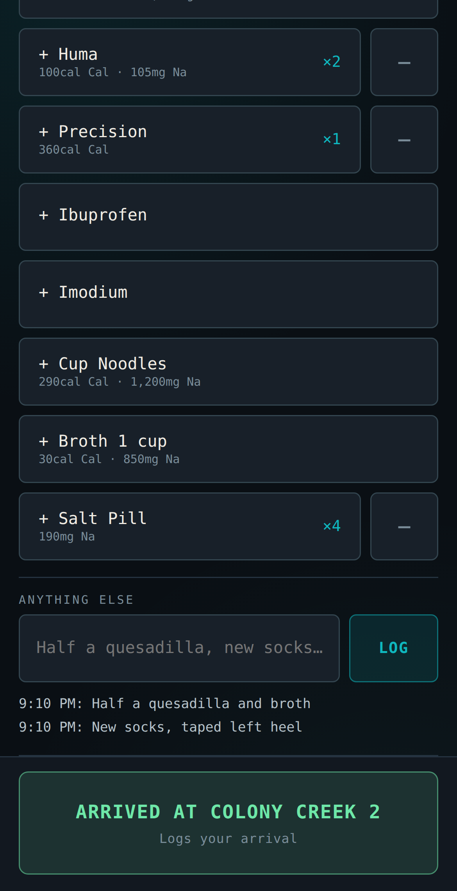
Hourly intake
Calories, fluid and sodium for the hour against your target, right on the racer screen.
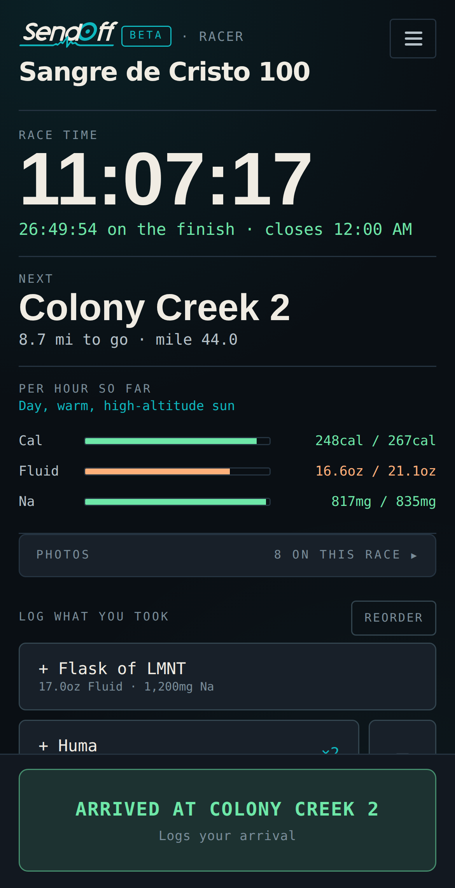
Finish card
Your time, the course profile and the numbers, in four sizes for every feed. You choose what goes on it.
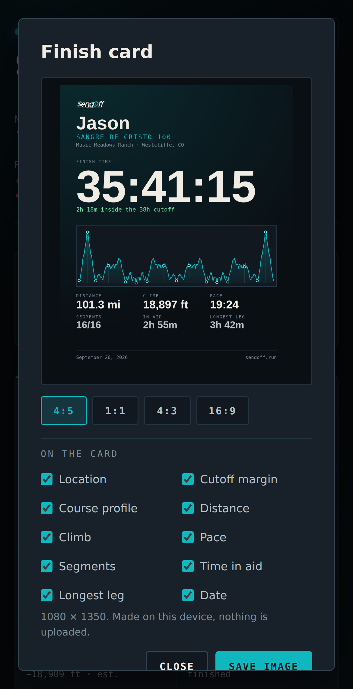
Charts
Leg times, pace, intake per hour and time in aid. Usually it is the aid stations.
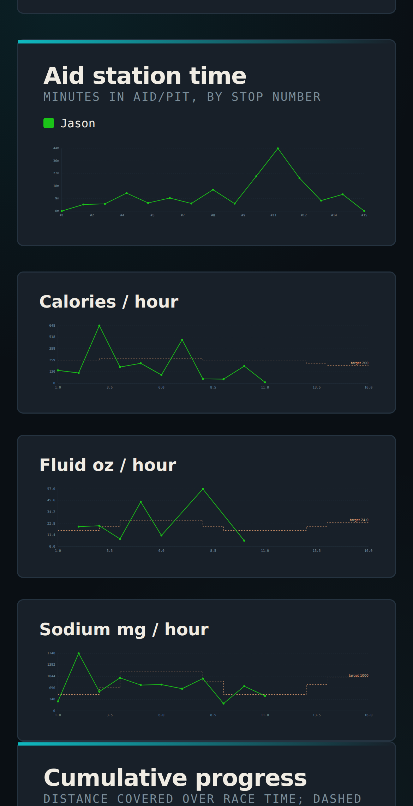
Race report
Every leg, every aid station, everything eaten. Print it, file it, bring it next year.
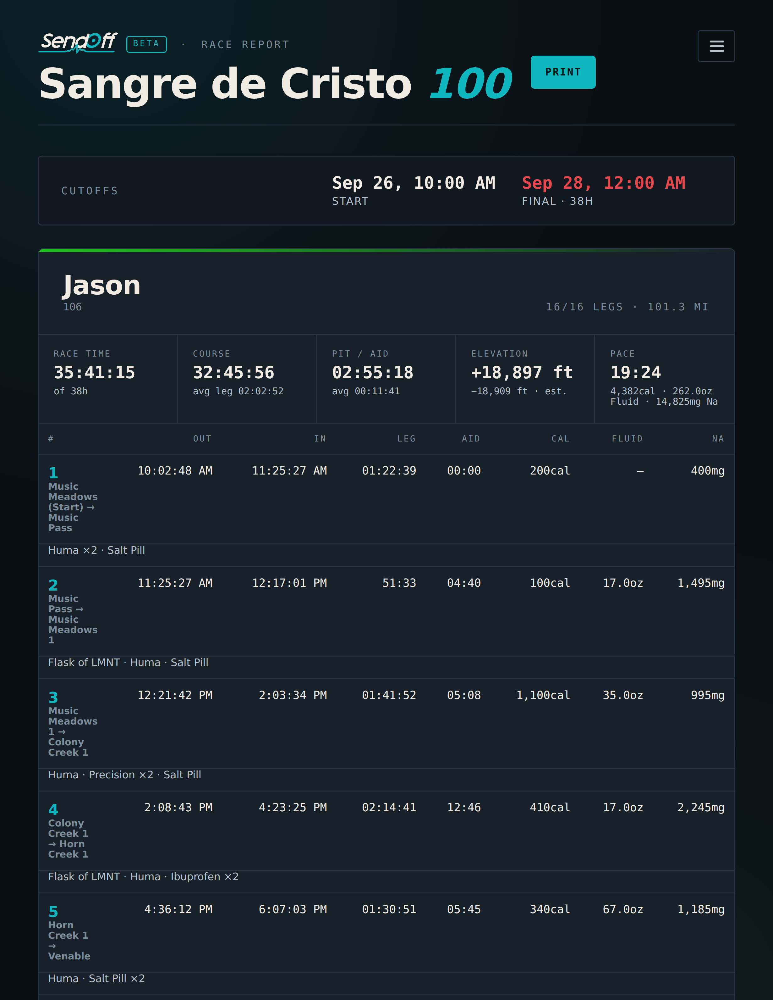
Every race, forever
Every public race stays readable for good, splits and all. No account needed. Never behind a paywall.
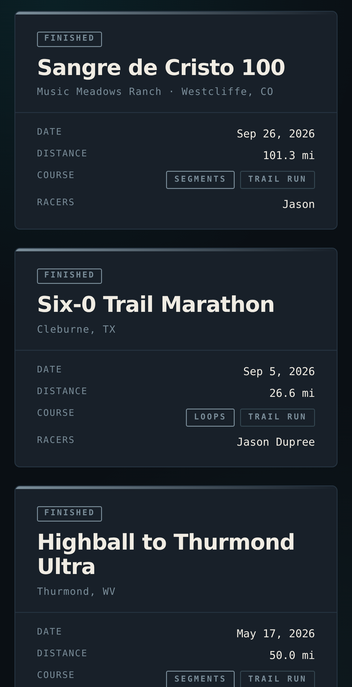
GPX upload
SendOff works out the climb and descent for every leg. Know better? Type in your own.
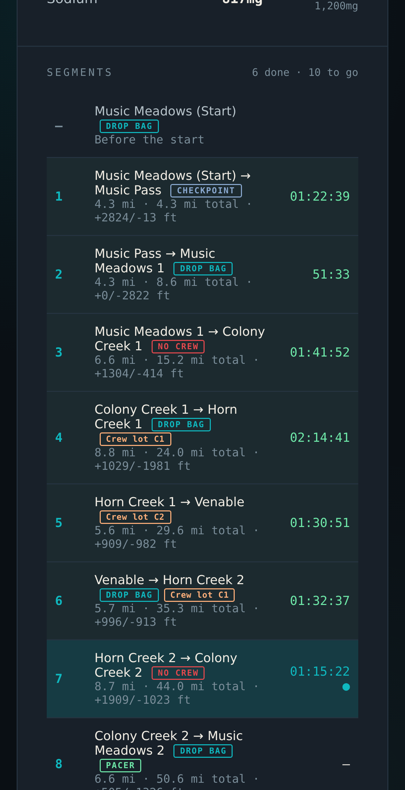
Not just running
Ultras on foot, on wheels and on water. Now with obstacle course races, for the 24-hour kind with a crew tent.
Private races
Keep a race off the hub. Only the people you invite can open it.
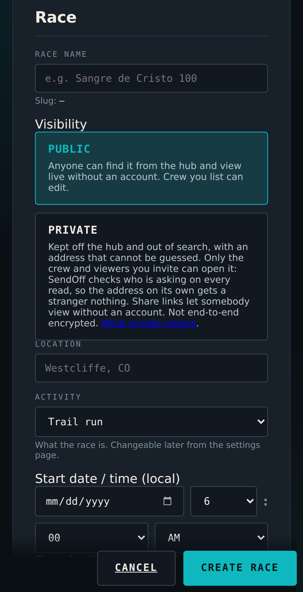